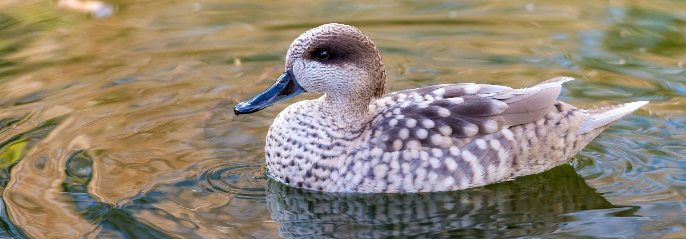
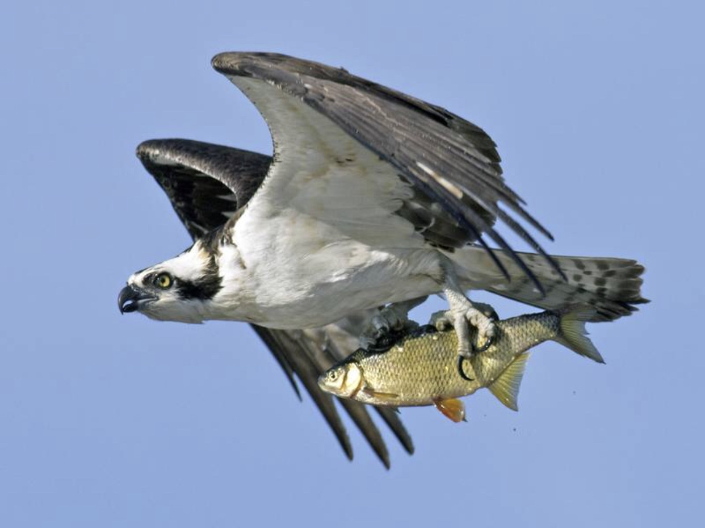
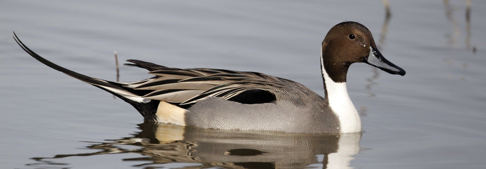
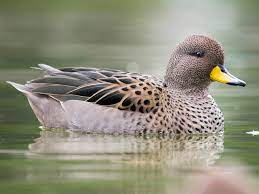
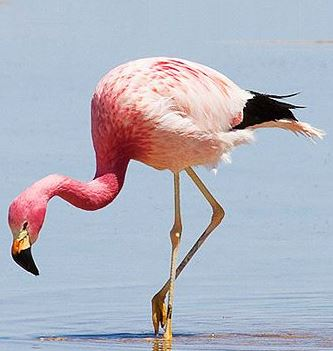

| Información | Imagen | Audio | |
|---|---|---|---|
| Nombre | Datos Curiosos | ||
| Cerceta Pardilla | Esta pequeña ave acuática se encuentra en peligro crítico de extinción debido a la pérdida y degradación de su hábitat, la contaminación del agua y la caza ilegal. Habita principalmente en humedales del Mediterráneo y del norte de África. |  | |
| Aguila Pescadora | Esta majestuosa ave rapaz se encuentra en peligro de extinción en algunas áreas debido a la destrucción del hábitat, la contaminación y la disminución de su principal fuente de alimento: los peces. Es conocida por su habilidad para pescar al lanzarse en picado hacia el agua. |  | |
| Anade Rabudo | Este pato de cola larga y pico afilado ha experimentado una disminución significativa en su población debido a la degradación de humedales, la pérdida de hábitat y la caza. Se encuentra en peligro de extinción en algunas regiones y es importante su conservación para mantener el equilibrio de los ecosistemas acuáticos. |  | |
| Pato Barcino | Esta especie de pato buceador se encuentra en peligro de extinción debido a la pérdida y degradación de humedales, la caza y la introducción de especies invasoras en su hábitat. Es conocido por sus ojos de color dorado y su capacidad para bucear en busca de alimento. |  | |
| Flamenco Andino | Este elegante y distintivo ave se encuentra en peligro crítico de extinción. Es endémico de los altiplanos de los Andes en América del Sur, y su población ha disminuido drásticamente debido a la pérdida y degradación de su hábitat, la caza y la contaminación de los cuerpos de agua donde se alimenta. Su plumaje rosa brillante y su largo cuello lo convierten en una especie icónica, pero su supervivencia está amenazada. El Flamenco Andino es un ejemplo destacado de cómo la alteración humana de los ecosistemas acuáticos puede poner en peligro a las especies que dependen de ellos. Los esfuerzos de conservación, como la protección de los humedales y la educación ambiental, son cruciales para preservar a esta hermosa ave y garantizar la salud de los ecosistemas acuáticos donde habita. |  | |
| "If a man aspires towards a righteous life, his first act of abstinence is from injury to animals." - Leo Tolstoy | |||
Las aves acuáticas desempeñan un papel crucial en los ecosistemas acuáticos. Son indicadores de la salud de los cuerpos de agua y ayudan a controlar la población de insectos, algas y otros organismos acuáticos. Además, muchas especies migratorias dependen de los hábitats acuáticos para su reproducción y alimentación. En cuanto a la importancia de estas podemos clasificarlas segun la siguiente informacion:
Las aves acuáticas enfrentan numerosas amenazas, como la pérdida de hábitat debido a la degradación de humedales, la contaminación del agua, la caza ilegal y el cambio climático. Es fundamental tomar medidas para proteger y conservar estos hábitats, promover prácticas sostenibles de pesca y caza, y concienciar sobre la importancia de la conservación de las aves acuáticas. stas aves desempeñan un papel crucial en los ecosistemas acuáticos al actuar como indicadores de la salud del medio ambiente y al proporcionar una serie de servicios ecológicos.